Portugal
Portugal é um país pequeno, mas repleto de charme. Possui uma rica história, belas praias e uma culinária deliciosa. Agora, vamos explorar duas cidades imperdíveis:
Porto
A segunda cidade mais importante de Portugal, o Porto é conhecido por seu clima mais frio e chuvoso em comparação com Lisboa. Com paisagens deslumbrantes do Rio Douro, igrejas cobertas de azulejos azuis e uma gastronomia invejável, o Porto é uma das principais cidades turísticas do país. Explore o centro histórico, visite a Livraria Lello, prove o famoso vinho do Porto e caminhe pela Ribeira à beira do rio.
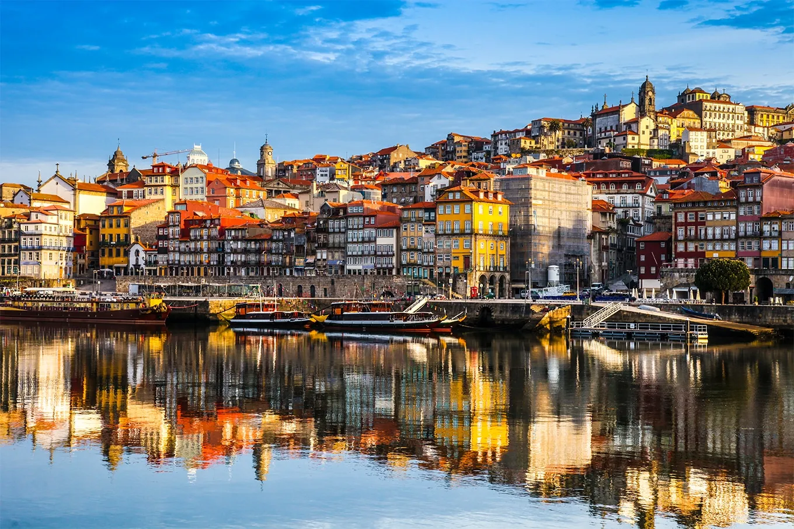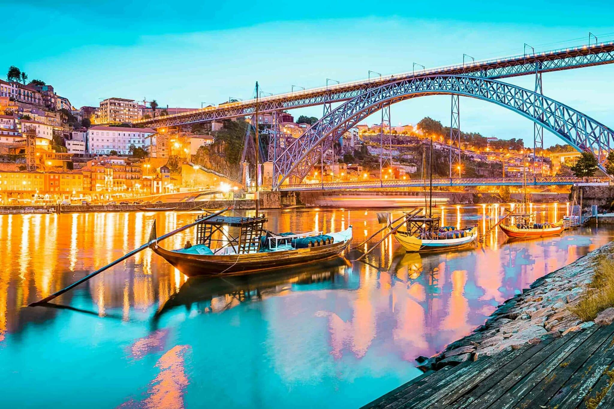Sintra
Conhecida como a “Roma Portuguesa”, Sintra é um verdadeiro conto de fadas. Seus palácios, castelos e jardins exalam romance e magia. Não deixe de visitar o Palácio da Pena, o Castelo dos Mouros e o Palácio Nacional de Sintra
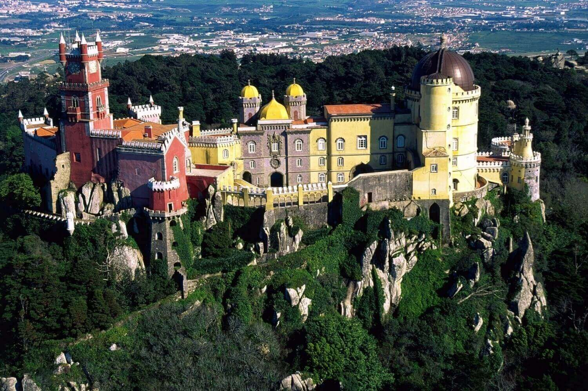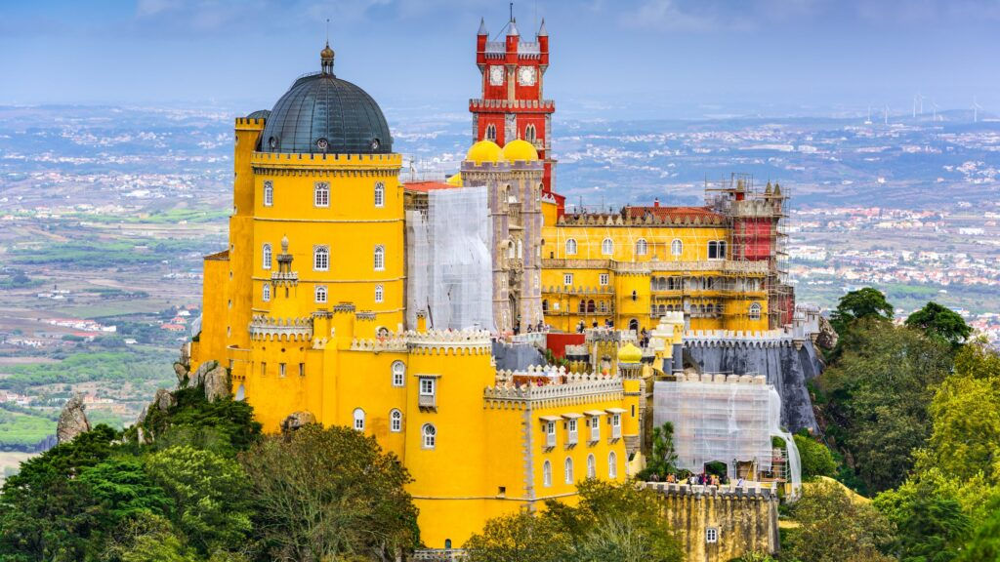Itália
A Itália, conhecida como “il Bel Paese” (o belo país), é uma nação que cativa os corações dos viajantes. Sua história, cultura artística e paisagens panorâmicas a tornam verdadeiramente maravilhosa. A península italiana abriga cidades únicas no mundo, litorais dignos de cartões postais, museus repletos de obras de arte e vilarejos medievais encantadores. Agora, vamos explorar duas cidades imperdíveis:
Roma
A capital italiana, Roma, emana história e grandiosidade. Visitar Roma é uma imersão no estilo de vida italiano, com o Coliseu, a Fontana di Trevi e a experiência de caminhar pelas ruas que respiram antiguidade.
 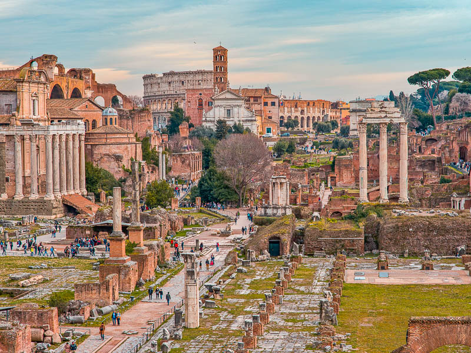
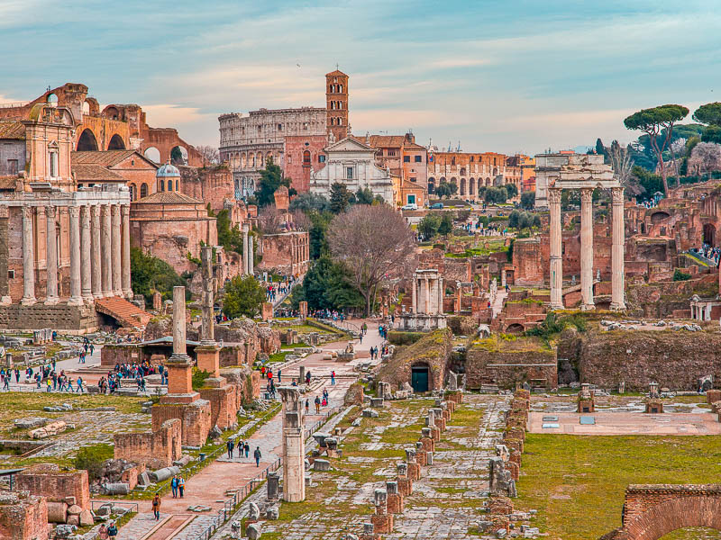
Veneza
A cidade mais romântica do mundo, Veneza, com seus canais sinuosos e gôndolas, atrai casais apaixonados. Explore a Piazza San Marco, a Basílica de São Marcos e deixe-se encantar pela atmosfera única.


França
A França é um país que desperta sonhos românticos e atrai viajantes de todo o mundo. Com sua rica história, cultura e paisagens deslumbrantes, a França oferece uma variedade de cidades encantadoras para explorar. Vamos conhecer duas delas:
Paris
A “Cidade das Luzes” e capital francesa, Paris, é um destino icônico. Conhecida por sua produção artística ao longo dos séculos, Paris é um lugar onde o romance e a cultura se entrelaçam. Além de visitar a Torre Eiffel, o Louvre e o Palácio de Versalhes, explore bairros como Marais, Montmartre e Bastille.
Toulouse
É conhecida por suas construções de tijolos monocromáticos. Com quase mil anos, a Catedral de Toulouse é uma atração imperdível. Além disso, Toulouse está próxima da fronteira com a Espanha e Andorra, tornando-a um ponto estratégico para explorar esses locais ou os Pirineus.
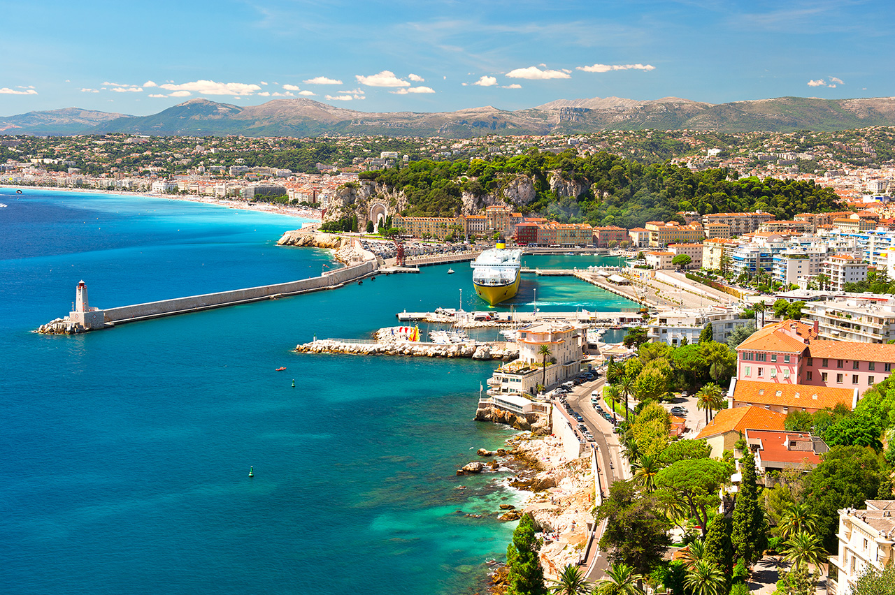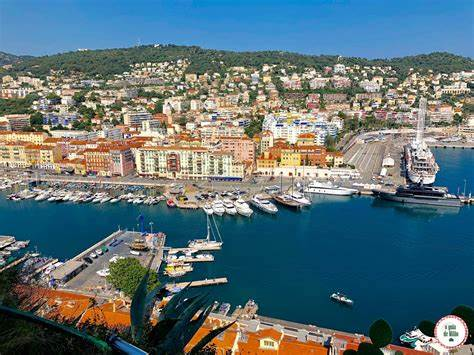Alemanha
A Alemanha é um país com uma rica herança cultural, arquitetura impressionante e uma população orgulhosa de suas origens. Além disso, suas cidades oferecem experiências únicas, desde a agitação de Berlim até a tradição de Nuremberg e a beleza de Colônia. Vale a pena explorar cada cantinho desse país! Agora, vamos explorar duas cidades imperdíveis:
Berlim
A capital alemã, Berlim, é uma cidade cheia de encantos. Seja você um amante de festas, um apreciador de museus ou um entusiasta da história, Berlim tem algo para todos. Explore a Ilha dos Museus, que abriga cinco importantes instituições, incluindo o Muro de Berlim e o Checkpoint Charlie. Além disso, a cidade é conhecida por suas salsichas e também oferece opções vegetarianas. A vida noturna berlinense é famosa, com baladas vibrantes para os festeiros
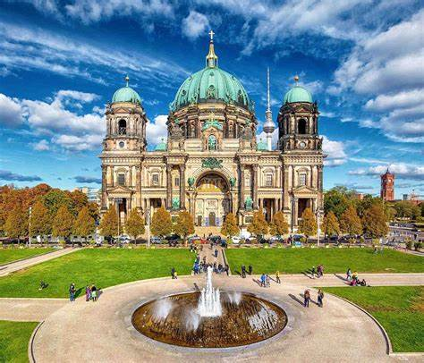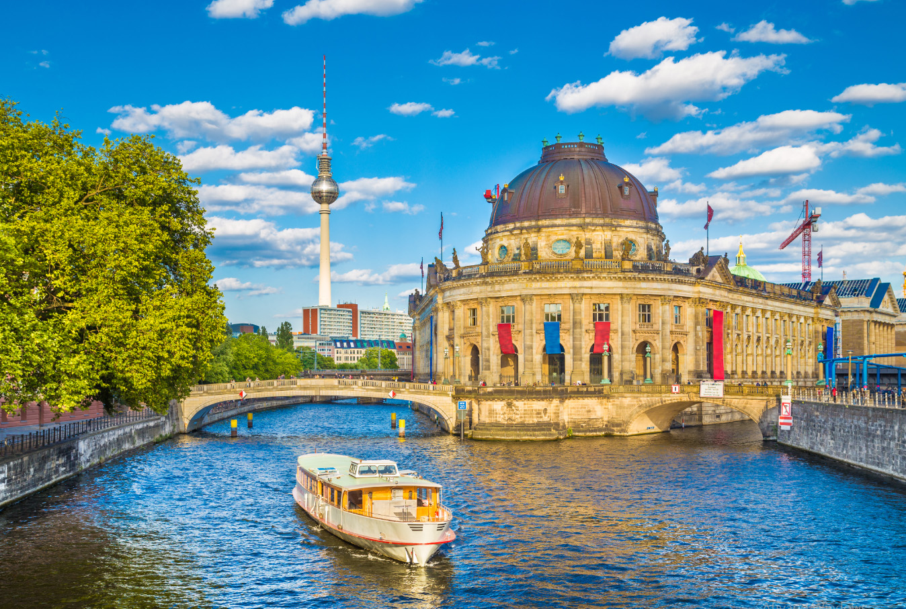Munique
A capital da Baviera, Munique, é famosa pelo festival Oktoberfest e suas cervejas. Além disso, a cidade oferece uma rica experiência cultural, com museus, jardins e galerias. Explore a culinária tradicional e os mercados de rua. Munique é um destino imperdível para quem deseja conhecer o melhor da história e cultura da região
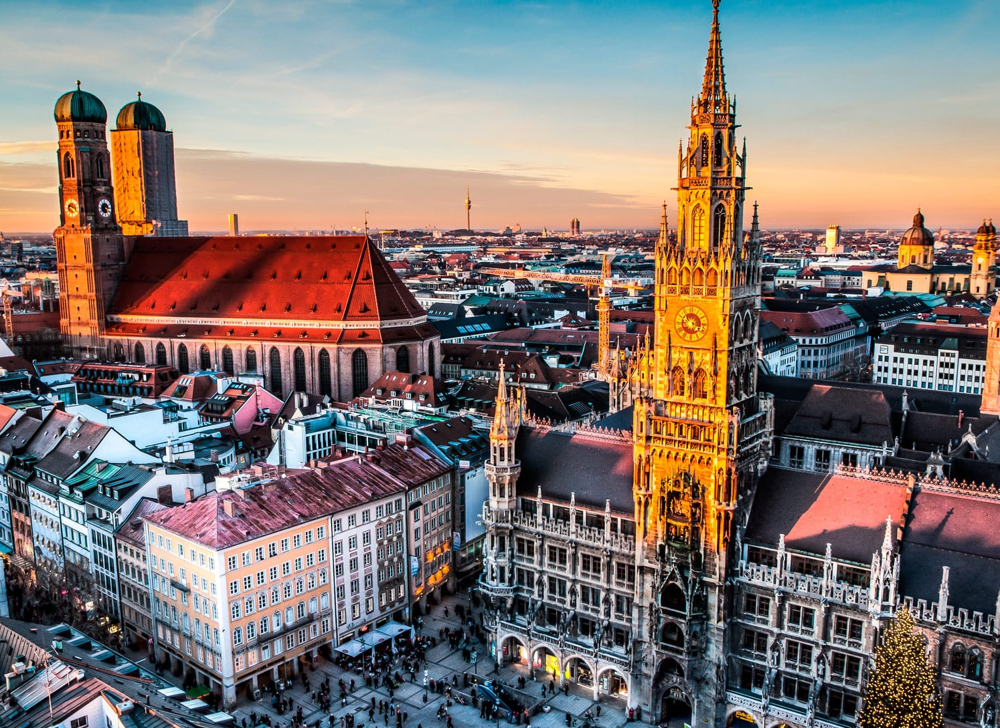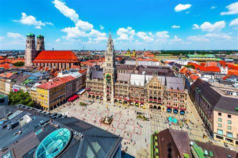Espanha
A Espanha é um país de beleza estonteante e riqueza cultural, conhecida por suas paisagens naturais diversas, arquitetura impressionante e uma culinária que é uma verdadeira celebração dos sentidos. Agora, vamos explorar duas cidades imperdíveis:
Madri
A capital da Espanha, Madri, é o coração pulsante do país, onde a realeza e a história se encontram com a modernidade. A cidade é famosa por seus museus de classe mundial, como o Prado, o Reina Sofia e o Thyssen-Bornemisza, que abrigam coleções de arte inestimáveis. Madri também é conhecida por sua vida noturna vibrante, com uma abundância de bares de tapas e discotecas que ficam abertos até o amanhecer. Além disso, o Parque do Retiro oferece um refúgio tranquilo do ritmo acelerado da cidade.
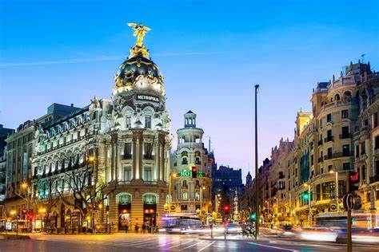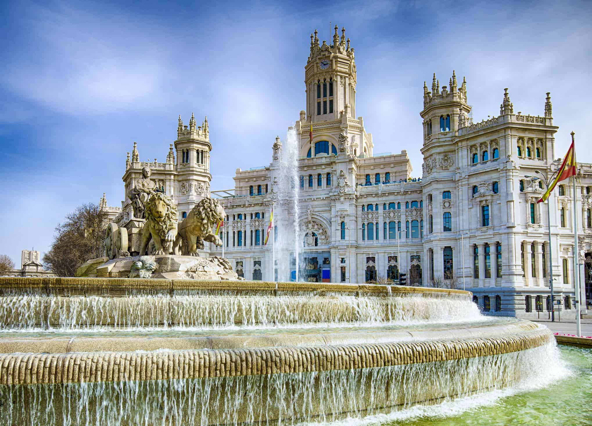Barcelona
Barcelona, a joia da Catalunha, é uma cidade de maravilhas arquitetônicas e espírito inovador. É o lar de algumas das criações mais icônicas de Antoni Gaudí, incluindo a Sagrada Família e o Parque Güell. A cidade também é conhecida por sua cena artística vibrante, praias urbanas e o famoso time de futebol, o FC Barcelona. Barcelona é uma cidade que nunca deixa de surpreender, com seu mix único de tradição catalã e influências cosmopolitas.